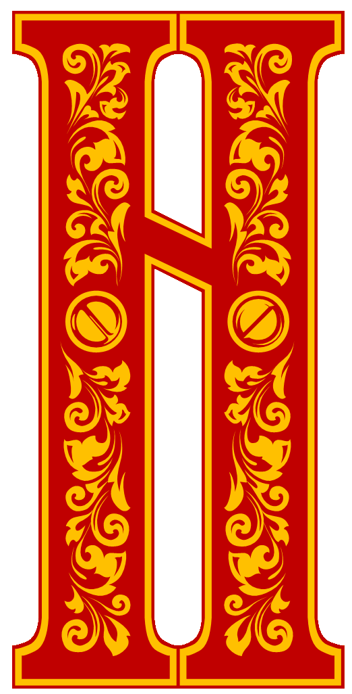

Сказки Пушкина
Сказки Пушкина
егде, в тридевятом царстве,
В тридесятом государстве,
Жил-был славный царь Дадон.
С молоду был грозен он
И соседям то и дело
Наносил обиды смело;
Но под старость захотел
Отдохнуть от ратных дел
И покой себе устроить.
Тут соседи беспокоить
Стали старого царя,
Страшный вред ему творя.
Чтоб концы своих владений
Охранять от нападений,
Должен был он содержать
Многочисленную рать.
Воеводы не дремали,
Но никак не успевали:
Ждут, бывало, с юга, глядь, —
Ан с востока лезет рать.
Справят здесь, — лихие гости
Идут от моря. Со злости
Инда плакал царь Дадон,
Инда забывал и сон.
Что и жизнь в такой тревоге!
Вот он с просьбой о помоге
Обратился к мудрецу,
Звездочету и скопцу.
Шлет за ним гонца с поклоном.
Вот мудрец перед Дадоном
Стал и вынул из мешка
Золотого петушка.
Петушок с высокой спицы
Стал стеречь его границы.
Чуть опасность где видна,
Верный сторож как со сна
Шевельнется, встрепенется,
К той сторонке обернется
И кричит: «Кири-ку-ку.
Царствуй, лежа на боку!»
И соседи присмирели,
Воевать уже не смели:
Таковой им царь Дадон
Дал отпор со всех сторон!
Год, другой проходит мирно;
Петушок сидит всё смирно.
Вот однажды царь Дадон
Страшным шумом пробужден:
«Царь ты наш! отец народа! —
Возглашает воевода, —
Государь! проснись! беда!»
— Что такое, господа? —
Говорит Дадон, зевая: —
А?.. Кто там?.. беда какая? —
Воевода говорит:
«Петушок опять кричит;
Страх и шум во всей столице».
Царь к окошку, — ан на спице,
Видит, бьется петушок,
Обратившись на восток.
Медлить нечего: «Скорее!
Люди, на́ конь! Эй, живее!»
Царь к востоку войско шлет,
Старший сын его ведет.
Петушок угомонился,
Шум утих, и царь забылся.
Вот проходит восемь дней,
А от войска нет вестей;
Было ль, не было ль сраженья, —
Нет Дадону донесенья.
Петушок кричит опять.
Кличет царь другую рать;
Сына он теперь меньшого
Шлет на выручку большого;
Петушок опять утих.
Снова вести нет от них!
Снова восемь дней проходят;
Люди в страхе дни проводят;
Петушок кричит опять,
Царь скликает третью рать
И ведет ее к востоку, —
Сам не зная, быть ли проку.
Войска идут день и ночь;
Им становится невмочь.
Ни побоища, ни стана,
Ни надгробного кургана
Не встречает царь Дадон.
«Что за чудо?» — мыслит он.
Вот осьмой уж день проходит,
Войско в горы царь приводит
И промеж высоких гор
Видит шелковый шатёр.
Всё в безмолвии чудесном
Вкруг шатра; в ущелье тесном
Рать побитая лежит.
Царь Дадон к шатру спешит...
Что за страшная картина!
Перед ним его два сына
Без шеломов и без лат
Оба мертвые лежат,
Меч вонзивши друг во друга.
Бродят кони их средь луга,
По притоптанной траве,
По кровавой мураве...
Царь завыл: «Ох дети, дети!
Горе мне! попались в сети
Оба наши сокола!
Горе! смерть моя пришла».
Все завыли за Дадоном,
Застонала тяжким стоном
Глубь долин, и сердце гор
Потряслося. Вдруг шатёр
Распахнулся... и девица,
Шамаханская царица,
Вся сияя как заря,
Тихо встретила царя.
Как пред солнцем птица ночи,
Царь умолк, ей глядя в очи,
И забыл он перед ней
Смерть обоих сыновей.
И она перед Дадоном
Улыбнулась — и с поклоном
Его за руку взяла
И в шатер свой увела.
Там за стол его сажала,
Всяким яством угощала;
Уложила отдыхать
На парчовую кровать.
И потом, неделю ровно,
Покорясь ей безусловно,
Околдован, восхищён,
Пировал у ней Дадон
Наконец и в путь обратный
Со своею силой ратной
И с девицей молодой
Царь отправился домой.
Перед ним молва бежала,
Быль и небыль разглашала.
Под столицей, близ ворот,
С шумом встретил их народ, —
Все бегут за колесницей,
За Дадоном и царицей;
Всех приветствует Дадон...
Вдруг в толпе увидел он,
В сарачинской шапке белой,
Весь как лебедь поседелый,
Старый друг его, скопец.
«А, здорово, мой отец, —
Молвил царь ему, — что скажешь?
Подь поближе! Что прикажешь?»
— Царь! — ответствует мудрец, —
Разочтемся наконец.
Помнишь? за мою услугу
Обещался мне, как другу,
Волю первую мою
Ты исполнить, как свою.
Подари ж ты мне девицу,
Шамаханскую царицу. —
Крайне царь был изумлён.
«Что ты? — старцу молвил он, —
Или бес в тебя ввернулся,
Или ты с ума рехнулся?
Что ты в голову забрал?
Я, конечно, обещал,
Но всему же есть граница.
И зачем тебе девица?
Полно, знаешь ли кто я?
Попроси ты от меня
Хоть казну, хоть чин боярской,
Хоть коня с конюшни царской,
Хоть пол-царства моего».
— Не хочу я ничего!
Подари ты мне девицу,
Шамаханскую царицу, —
Говорит мудрец в ответ.
Плюнул царь: «Так лих же: нет!
Ничего ты не получишь.
Сам себя ты, грешник, мучишь;
Убирайся, цел пока;
Оттащите старика!»
Старичок хотел заспорить,
Но с иным накладно вздорить;
Царь хватил его жезлом
По лбу; тот упал ничком,
Да и дух вон. — Вся столица
Содрогнулась, а девица —
Хи-хи-хи! да ха-ха-ха!
Не боится, знать, греха.
Царь, хоть был встревожен сильно,
Усмехнулся ей умильно.
Вот — въезжает в город он...
Вдруг раздался легкой звон,
И в глазах у всей столицы
Петушок спорхнул со спицы,
К колеснице полетел
И царю на темя сел,
Встрепенулся, клюнул в темя
И взвился... и в то же время
С колесницы пал Дадон —
Охнул раз, — и умер он.
А царица вдруг пропала,
Будто вовсе не бывало.
Сказка ложь, да в ней намек!
Добрым молодцам урок.